65 tons · Inner Sphere · 30 variants · 2491 to 3127

Start with the year. 2491. That's not just old for this site, it's the oldest design we've covered by a genuine margin: older than the Locust, older than the Warhammer, older than anything else that's had a page here. This thing predates most of what people think of as classic BattleTech by decades.
The manufacturer's identity is the surprising part. Earthwerks set up shop on Tikonov for the Capellan Confederation, a nation that had almost no BattleMech manufacturing experience at the time, and under an engineer named Sarkia Menendez they got the thing working anyway, quickly enough to draw attention from every neighbour watching. That one lucky design turned Earthwerks into a serious manufacturer almost overnight.
Here's the twist Sarna doesn't dwell on but I think about a lot. The Thunderbolt was a Capellan mech first. By the time most people meet it, Steiner and Marik are the ones fielding most of them, because Earthwerks and Olivetti both chased sales across every border rather than keeping the design to themselves. The Confederation built the thing and then watched everyone else end up with more of them.
What you've got. A large laser, an LRM 15, three medium lasers positioned to focus their damage into one spot, an SRM 2, and two machine guns. That's a weapon for every range band, which is the whole point: the Thunderbolt was never built to specialise. It covers every range band adequately rather than mastering one.
And the catch, which is a famous one. Fifteen heat sinks trying to cope with all of that firing at once, and they can't. It's the T-Bolt's one real flaw, bad enough that the standard fix is genuinely to stand the mech in a lake before the shooting starts. Sit in water and it sheds heat the sinks never could on their own. That's not a house rule anyone made up for their table, it's what the source material says crews actually did.
If you're choosing one: the TDR-5S is the classic and still fine, the TDR-7M fixes the ammunition and heat problems properly, the TDR-9M has the best story of any variant here, and the TDR-17S is the best-built of the late ones.
Thirteen tons of armour on sixty-five tons is a lot, and it's the reason the old readouts point out a Thunderbolt can carry more plate than some assault mechs. That's not spin. Go and check an Awesome or a Banshee's armour tonnage and you'll find plenty of hundred-tonners that don't beat this heavy.
The weapon spread is deliberate rather than an accident of history. A large laser and an LRM 15 handle the approach, three medium lasers mounted close together concentrate their damage into one spot rather than spreading it thin, and an SRM 2 finishes whatever the lasers opened up. Two machine guns handle infantry. There's a reason for every piece of this loadout, and none of it is wasted tonnage.
What it doesn't have is the heat sinks to run all of it. Fifteen singles against a full alpha strike leaves you well into the red, and every pilot learns the same lesson: pick two or three weapon groups and stick to them, or find water. I mentioned the waterhole tactic already because it's genuinely how the mech gets used, not a joke people make about it.
One more thing worth knowing before you climb in: the cockpit's roomy. Genuinely, notably roomy, enough that Sarna calls it out by name against the Atlas and the BattleMaster. It's a small thing and pilots apparently notice it.
This is my favourite Thunderbolt story and it isn't really about the Thunderbolt at all.
By 3067 the design was old enough that Irian BattleMechs Unlimited had built something meant to replace it outright: the Tempest. When Earthwerks announced the TDR-9M, a proper modern rebuild, Irian didn't take it well. They lobbied the Free Worlds League's own governing body to block any new Thunderbolt production outright, on the grounds that their replacement already existed.
It was heading for a genuine legal fight until the Word of Blake stepped in with a compromise that reads like something out of an old legend: let the two designs settle it in combat, and whichever one won would be the one supplying the Blakist military going forward. The TDR-9M won. Starting in April 3067 the Word of Blake got their Thunderbolts, and the Free Worlds League followed not long after.
A design old enough to have been mothballed twice over had to prove itself against the machine built specifically to end it, and came out on top.
Within fifteen years of that first Tikonov production run, Earthwerks pushed outward into the Free Worlds League and set up on Keystone to build the upgraded TDR-5S, and Olivetti Weaponry on Sudeten picked the design up not long after. That's what made Steiner and Marik the biggest Thunderbolt users through the Succession Wars, even though both were perfectly happy selling the design on to anyone else who'd buy it. Which is how the Thunderbolt ends up everywhere: not because one faction guarded it jealously, the way Clan Wolf did with the Timber Wolf, but because everyone who built it wanted to sell as many as possible.
The Taurian Concordat became one of the biggest Periphery users off the back of two separate manufacturers, Vandenberg and Taurus Territorial, both building the thing from their own factories and selling heavily to mercenaries. By the time the Clan Invasion arrived, both Earthwerks and Olivetti had pushed lostech-era upgrades into the field, right up until Clan Jade Falcon took Sudeten and the Olivetti line went with it. They kept building Thunderbolts on outdated tech anyway, right through to 3054, because there was still a market for them even under new management.
Then the Tempest business, which I've already covered above because it deserved its own section. A design that had been in service since the Age of War beat the machine purpose-built to retire it, and kept its factory.
The Jihad wasn't kind to the Periphery side of the story. Taurian production took heavy damage: the SRM factories on Perdition were destroyed outright, the plants on Sterope and MacLeod's Land badly hurt, and the entire Taurus Territorial Industries facility on the Concordat's own capital wiped out. A design that had survived six centuries by being everywhere came within one bad campaign of losing a big piece of its manufacturing base in one go.
It's still around. Trellshire Heavy Industries and Earthwerks were both fielding new variants into the 3120s, over six hundred years after Sarkia Menendez's team on Tikonov got the first one working ahead of schedule.
Every verdict below is against other Thunderbolts available in the same era. Thirty variants over six centuries means the era filtering does real work here, more than on most of the chassis we've covered.
Nothing in its era does the chassis's job better for the money.
Does the job competently. Another variant does it better or cheaper, but there is no reason to avoid this one.
Only earns its Battle Value if you specifically need what it carries. C3, stealth, a command console, flak, jump jets.
Another variant in the same era, at no more than 3 percent above its Battle Value, matches or beats it on every Alpha Strike damage band, on armour, on structure, and carries every special ability it has. Nothing gained, something lost, no dearer.
Only the Trap tier is calculated. It is worked out from the variant data rather than decided by me, which means it is falsifiable: to argue with it you only have to name something the cheaper machine gives up. The other three are my opinion and you should treat them that way. 1 of the 30 Thunderbolt variants fail the Trap test. The full rating scale is here, including what it deliberately does not measure.
All 30 are in the table further down. These are the ones that change how the machine plays.
65 tons · BV 1335 · PV 36 · Brawler · 2505
Walk 4 / Run 6 / Jump 0 · 15 Single · 260 Fusion Engine
2x Machine Gun, 1x Large Laser, 3x Medium Laser, 1x LRM 15, 1x SRM 2
The one everyone means, 2505. A large laser, an LRM 15, three medium lasers clustered for concentrated fire, an SRM 2, and two machine guns. Something for every range and fifteen heat sinks that can't keep up with any of it at once. Still the definitive T-Bolt.
65 tons · BV 1613 · PV 41 · Brawler · 2753
Walk 4 / Run 6 / Jump 0 · 14 IS Double · 260 Fusion Engine
2x Small Pulse Laser, 1x ER PPC, 3x Medium Laser, 1x LRM 15, 1x Streak SRM 2
The SLDF Royal from 2753. Endo steel, an ER PPC instead of the large laser, Artemis on the LRM, a Streak SRM 2, small pulse lasers instead of the machine guns, and fourteen doubles. Better than the standard everywhere it counts.
65 tons · BV 1495 · PV 39 · Brawler · 3049
Walk 4 / Run 6 / Jump 0 · 15 IS Double · 260 Fusion Engine
2x Machine Gun, 1x ER Large Laser, 3x Medium Laser, 1x Streak SRM 2, 1x LRM 15
The 3049 Star League upgrade. Ferro-fibrous cuts armour weight without cutting protection, the freed tonnage buys double heat sinks and a Streak SRM 2, and CASE finally protects the ammunition. This is what the classic loadout should've been from the start.
65 tons · BV 1648 · PV 38 · Skirmisher · 3067
Walk 4 / Run 6 / Jump 4 · 10 IS Double · 260 Fusion Engine
1x Light Gauss Rifle, 3x ER Medium Laser, 1x LRM 15
Earthwerks' 3067 rebuild, and the one that won a duel. Rotary AC/5, three ER mediums, a Streak SRM 6, a targeting computer, and the cockpit moved to the left torso after decades of pilots complaining they were sitting out in front of the mech. Won a legal fight by combat trial, which is a sentence I don't get to write often.
65 tons · BV 1809 · PV 42 · Skirmisher · 3067
Walk 4 / Run 6 / Jump 4 · 10 IS Double · 260 Fusion Engine
4x Medium Pulse Laser, 1x Gauss Rifle
3067, and it turns the T-Bolt into a long-range specialist. Endo steel, ferro-fibrous, doubles, a Gauss rifle, four medium pulse lasers, four jump jets and a Guardian ECM. Barely resembles the original and it's better for it.
65 tons · BV 1803 · PV 40 · Skirmisher · 3070
Walk 4 / Run 6 / Jump 4 · 10 IS Double · 260 Compact Engine
4x Medium Pulse Laser, 1x ER PPC
3070, and the one that actually pulls off triple-strength myomer on this chassis: an ER PPC, four medium pulse lasers, a compact engine and gyro for the weight, and TSM to compensate for the resulting heat rather than fight it. Ten doubles, four jump jets, a Guardian ECM. The best-integrated late Thunderbolt there is.
65 tons · BV 2170 · PV 46 · Juggernaut · 3054
Walk 4 / Run 6 / Jump 0 · 17 Clan Double · 260 Fusion (Clan) Engine
4x ER Medium Laser, 2x ER Small Laser, 1x ER PPC, 1x Streak SRM 6, 2x Small Pulse Laser, 1x Anti-Missile System
Clan Jade Falcon's rebuild after they took Sudeten. An ER PPC, an ER medium and two ER smalls in the arms, a Streak SRM 6 and three more ER mediums in the left torso, twin small pulse lasers and an anti-missile system in the right, on seventeen doubles. The heaviest hitter in the whole chassis.
Piloting one. Manage the heat before it manages you. Decide before the game which weapon groups you're actually going to fire together and stick to the plan rather than alpha-striking because the target's in range. If there's water on the map, use it, because that's not a gimmick, it's how the design's meant to be played. Lean on the armour: you can absorb hits most machines your weight class can't.
Fighting one. It's dangerous at every range and outstanding at none of them, so pick the range where your own mech has the bigger edge and stay there. Watch for it parking in water early, because a Thunderbolt that's solved its own heat problem is a much nastier fight than one that hasn't. Against the XL-engine variants, a side torso hit is still the fastest way to end things.
What I see go wrong. New pilots fire everything every turn because the mech's carrying so much. Two or three turns of that and you're standing still with a heat penalty while everyone shoots the thing that can't move. Restraint is the actual skill this mech asks for.
If you run solo games with our AI opponent, the Thunderbolt spreads wider across role tags than almost anything else on the site: 11 Brawlers, 9 Skirmishers, 4 Snipers, 3 Missile Boats and 3 Juggernauts.
A useful chassis to put opposite a scenario where you don't want the AI's behaviour to be predictable from the model number alone.
Damage figures are the Alpha Strike short, medium and long values. BV is Battle Value 2.0.
| Variant | Intro | BV | PV | Role | Weapons | S/M/L | Verdict |
|---|---|---|---|---|---|---|---|
| Age of War | |||||||
| TDR-1C | 2491 | 1237 | 33 | Missile Boat | 2x Machine Gun, 1x Large Laser, 3x Medium Laser, 1x LRM 15, 1x SRM 2 | 2/2/1 | Situational |
| TDR-5S | 2505 | 1335 | 36 | Brawler | 2x Machine Gun, 1x Large Laser, 3x Medium Laser, 1x LRM 15, 1x SRM 2 | 3/3/1 | Worth it |
| Star League | |||||||
| TDR-5Sb | 2753 | 1613 | 41 | Brawler | 2x Small Pulse Laser, 1x ER PPC, 3x Medium Laser, 1x LRM 15, 1x Streak SRM 2 | 4/4/3 | Worth it |
| Early Succession War | |||||||
| TDR-5D | 2821 | 1231 | 35 | Brawler | 1x LRM 10, 1x AC/20 | 3/3/1 | Solid |
| C | 2832 | 1671 | 39 | Sniper | 1x ER Medium Laser, 2x ER Small Laser, 1x Large Pulse Laser, 1x ER Large Laser | 4/4/3 | Solid |
| Late Succession War - LosTech | |||||||
| TDR-5SS | 2930 | 1337 | 35 | Brawler | 1x PPC, 1x SRM 6, 3x Medium Laser, 1x Flamer | 3/3/1 | Solid |
| TDR-5SE | 3000 | 1414 | 35 | Skirmisher | 1x Large Laser, 1x LRM 10, 3x Medium Laser | 3/3/1 | Worth it |
| Late Succession War - Renaissance | |||||||
| TDR-5S-T (Tallman) | 3025 | 1447 | 37 | Brawler | 1x Large Laser, 8x Medium Laser | 4/4/0 | Solid |
| Clan Invasion | |||||||
| TDR-7M | 3049 | 1495 | 39 | Brawler | 2x Machine Gun, 1x ER Large Laser, 3x Medium Laser, 1x Streak SRM 2, 1x LRM 15 | 4/4/2 | Worth it |
| TDR-9SE | 3049 | 1439 | 37 | Skirmisher | 1x Large Pulse Laser, 1x LRM 10, 3x Medium Laser | 3/4/1 | Solid |
| TDR-9S | 3050 | 1494 | 37 | Brawler | 2x Machine Gun, 1x ER PPC, 1x SRM 6, 3x Medium Laser, 2x Flamer, 1x Anti-Missile System | 4/3/1 | Solid |
| TDR-9W | 3053 | 1985 | 42 | Brawler | 1x Large Pulse Laser, 3x Medium Pulse Laser, 1x LRM 10 | 5/5/2 | Solid |
| C 2 | 3054 | 2170 | 46 | Juggernaut | 4x ER Medium Laser, 2x ER Small Laser, 1x ER PPC, 1x Streak SRM 6, 2x Small Pulse Laser, 1x Anti-Missile System | 6/6/2 | Worth it |
| TDR-8M | 3058 | 1644 | 38 | Brawler | 1x ER Large Laser, 3x ER Medium Laser, 1x LRM 15 | 3/4/2 | Solid |
| Civil War | |||||||
| TDR-10SE | 3067 | 2008 | 44 | Missile Boat | 1x ER PPC, 1x LRM 10, 3x ER Medium Laser | 3/3/2 | Worth it |
| TDR-7SE | 3067 | 1809 | 42 | Skirmisher | 4x Medium Pulse Laser, 1x Gauss Rifle | 4/5/2 | Worth it |
| TDR-9M | 3067 | 1648 | 38 | Skirmisher | 1x Light Gauss Rifle, 3x ER Medium Laser, 1x LRM 15 | 3/4/2 | Worth it |
| TDR-9NAIS | 3067 | 1864 | 47 | Skirmisher | 1x Rotary AC/5, 1x Streak SRM 6, 3x ER Medium Laser | 6/6/0 | Worth it |
| Jihad | |||||||
| TDR-11SE | 3069 | 1754 | 38 | Skirmisher | 1x Snub-Nose PPC, 3x ER Medium Laser, 1x MML 7 | 3/3/0 | Worth it |
| TDR-17S | 3070 | 1803 | 40 | Skirmisher | 4x Medium Pulse Laser, 1x ER PPC | 3/3/1 | Worth it |
| TDR-60-RLA | 3072 | 1975 | 38 | Skirmisher | 2x Snub-Nose PPC, 2x Medium Pulse Laser, 2x Small Laser, 3x ER Medium Laser, 1x Small Pulse Laser | 3/3/0 | Trapbeaten by TDR-17S |
| TDR-9Nr | 3072 | 1635 | 47 | Skirmisher | 2x Anti-BattleArmor Pods (B-Pods), 1x Large VSP Laser, 1x Light PPC, 1x Streak SRM 6, 3x ER Medium Laser | 4/4/1 | Solid |
| TDR-11S | 3074 | 1570 | 37 | Juggernaut | 4x Machine Gun, 1x ER PPC, 1x SRM 6, 3x ER Medium Laser, 1x Anti-Missile System | 4/3/1 | Solid |
| Early Republic | |||||||
| TDR-10M | 3082 | 1727 | 37 | Sniper | 1x Heavy PPC, 1x Snub-Nose PPC, 1x Light PPC, 1x ER Medium Laser, 1x MML 5 | 3/3/3 | Solid |
| TDR-9T | 3083 | 1589 | 40 | Missile Boat | 2x Light PPC, 3x ER Medium Laser, 1x LRM 10 | 3/3/2 | Worth it |
| TDR-10M (Ilyena) | 3085 | 1616 | 43 | Sniper | 1x Heavy PPC, 2x Light PPC, 1x ER Medium Laser, 1x MML 5, 1x C3 Computer (Master) | 2/3/3 | Solid |
| TDR-10M (Salazar) | 3085 | 1763 | 37 | Brawler | 1x Plasma Rifle, 1x Snub-Nose PPC, 1x Medium Pulse Laser, 1x Light PPC, 1x MML 5, 1x Flamer, 1x Small VSP Laser | 3/2/1 | Worth it |
| TDR-10S | 3086 | 1766 | 38 | Sniper | 1x ER PPC, 1x ER Large Laser, 3x ER Medium Laser, 1x LRM 15 | 3/3/3 | Worth it |
| TDR-7S | 3091 | 1582 | 37 | Brawler | 2x Small X-Pulse Laser, 1x ER Large Laser, 1x LRM 15, 3x ER Medium Laser, 1x SRM 2 | 3/3/2 | Solid |
| Late Republic | |||||||
| TDR-12R | 3127 | 1975 | 41 | Juggernaut | 2x Medium Laser, 1x Plasma Rifle, 1x LRM 15, 3x Small VSP Laser, 2x Thunderbolt 5 | 4/4/2 | Situational |
Availability for the TDR-5S by era, straight off the Master Unit List.
| Era | Available to |
|---|---|
| Star League (2571 - 2780) | Inner Sphere General, Mercenary, Periphery General, Star League General |
| Early Succession War (2781 - 2900) | HW Clan General, Inner Sphere General, Mercenary, Periphery General, Star League in Exile |
| Late Succession War - LosTech (2901 - 3019) | ComStar, Inner Sphere General, Kell Hounds, Mercenary, Periphery General, Wolf's Dragoons |
| Late Succession War - Renaissance (3020 - 3049) | ComStar, Inner Sphere General, Kell Hounds, Mercenary, Periphery General, Wolf's Dragoons |
| Clan Invasion (3050 - 3061) | Inner Sphere General, Kell Hounds, Mercenary, Periphery General, Wolf's Dragoons |
| Civil War (3062 - 3067) | Inner Sphere General, Kell Hounds, Mercenary, Periphery General, Wolf's Dragoons |
| Jihad (3068 - 3080) | Escorpión Imperio, Inner Sphere General, Kell Hounds, Mercenary, Periphery General, Wolf's Dragoons |
| Early Republic (3081 - 3100) | Escorpión Imperio, Inner Sphere General, Mercenary, Periphery General |
| Late Republic (3101 - 3130) | Capellan Confederation, Escorpión Imperio, Free Worlds League (Marik-Stewart Commonwealth), Free Worlds League (Non-Aligned Worlds), Free Worlds League (Oriente Protectorate), Free Worlds League (Regulan Fiefs), Lyran Commonwealth, Mercenary, Periphery General |
| Dark Age (3131 - 3150) | Calderon Protectorate, Escorpión Imperio, Marian Hegemony, Mercenary, Pirates, Scorpion Empire, Taurian Concordat |
| ilClan (3151 - 9999) | Calderon Protectorate, Fronc Reaches, Marian Hegemony, Mercenary, Pirates, Scorpion Empire, Taurian Concordat |
70 tons · Inner Sphere · 1 variants · BV 2174 to 2174
Clan Jade Falcon’s post-Jihad revision of the design, built after they had already been fielding captured examples for decades.
75 tons · Inner Sphere · 36 variants · BV 1335 to 2708
No relation, but the machine the Thunderbolt kept getting paired with, because there were never enough Marauders to go round on their own.
70 tons · Mixed · 31 variants · BV 1299 to 2772
The third leg of that same Succession Wars trio: Warhammer, Marauder, Thunderbolt, routinely fielded together because none of them alone was common enough.
65 tons · Mixed · 28 variants · BV 1204 to 2264
The other heavy built around a similarly broad weapon spread, from roughly the same generation.
The TDR-5S is the classic and it's still perfectly good. The TDR-7M fixes the original's ammunition and heat problems without changing the concept. For a late-era pick, the TDR-17S at BV 1803 is the best-integrated of the modern variants, and the TDR-9M has the best story attached to it of any Thunderbolt built.
Fifteen heat sinks trying to support a large laser, an LRM 15, three medium lasers and an SRM 2 firing together, which adds up to considerably more heat than fifteen sinks can shed. It's the design's one acknowledged flaw, serious enough that commanders developed a standing tactic for it: putting the mech in water at the start of a battle so it can vent heat faster.
It started as one. Earthwerks built the first Thunderbolt on Tikonov for the Capellan Confederation, and it stayed a traditionally Capellan design until the Fourth Succession War and the Andurien Wars. By then Earthwerks and Olivetti had both expanded outward and sold the design so widely that Steiner and Marik ended up fielding more of them than the Confederation that built it first.
It's Earthwerks' 3067 rebuild of the Thunderbolt, and it's notable because a rival manufacturer's replacement design, the Tempest, tried to have it legally blocked from production. The Word of Blake settled the dispute by having the two designs fight it out in a combat trial. The TDR-9M won, and the Word of Blake began receiving Thunderbolts that same year.
Very old. It entered production in 2491, which makes it the oldest chassis covered on this site, older than the Locust, the Warhammer and the Marauder. It was still getting new variants in the 3120s, which puts its production run at well over six hundred years.
Stats on this page are generated directly from our variant database, which is reconciled against the Master Unit List for Battle Value, introduction dates and per-era faction availability. Alpha Strike damage values are the standard card figures. If you spot something wrong, tell me and I will fix it.